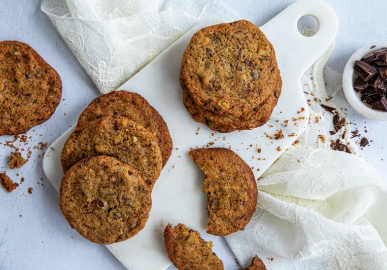

Cookies

Description
Chocolate chip cookies are one of the world's most popular cookies. No wonder - these chocolate biscuits are scrumptious!
Ingredients
- 225 g butter at room temperature
- 180 g of sugar
- 180 g brown sugar
- 1 teaspoon vanilla sugar
- 2 pcs. egg
- 300 g butter
- 350 g wheat flour
- 1 teaspoon baking soda
- 300 g dark cooking chocolate
- 150 g hazelnuts
Steps
- Beat the butter, sugar, brown sugar and vanilla until light and fluffy. Beat in the eggs one by one. Mix in wheat flour and baking soda. Chop the chocolate and nuts and fold it into the dough.
- Use a tablespoon and form evenly sized balls that are placed well apart on baking paper.
- Bake the biscuits in the middle of the oven at 190 °C for 10-12 minutes, or until they are golden and the chocolate has melted. Allow the biscuits to cool on the tray for a few minutes before transferring to a wire rack and cooling completely.